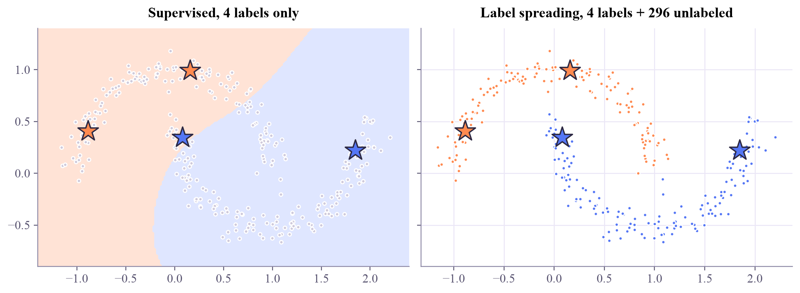
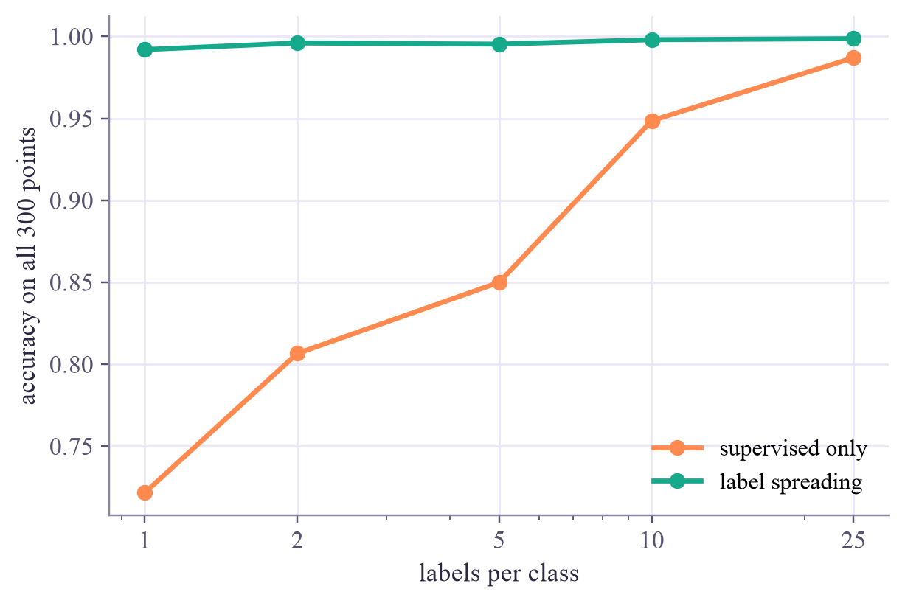

labeled points: 4 of 300
Machine Learning
 about 12 min
about 12 min ml-w6d5.ipynb
ml-w6d5.ipynb
Semi-supervised learning
A handful of labels and a mountain of unlabeled data. The unlabeled points show the shape; the few labels name the parts.
In this lesson you will
- Explain when semi-supervised learning helps, and the assumptions behind it
- Watch label spreading carry a few labels across a similarity graph
- Recognise the trap of self-training: confirmation bias
Warm-up
1 minFive graded essays

A teacher grades only five of a hundred essays and asks you to grade the rest. You'd read the ungraded ones too, notice which ones resemble which graded essay, and grade by resemblance. You'd be using the unlabeled essays to understand the space of essays. That is semi-supervised learning.
Big idea
4 minLet the shape of the data help
Labels are often expensive: a doctor must read each scan, an expert must check each crystal structure, a physicist must run a reference experiment. Unlabeled data is often cheap. Semi-supervised learning uses both.
It works when two (reasonable) assumptions hold:
- Smoothness: points that are close together, connected through dense regions, tend to share a label.
- Cluster (low-density) assumption: the decision boundary should run through the empty gaps, not through crowds of points.
Two classic methods:
Label spreading
Connect each point to its nearest neighbors to make a graph, then let the known labels flow along the edges, like ink in wet paper, until every point has a color. Labels travel easily inside a dense cluster and barely across a gap.
Self-training
Train on the labeled points, add the predictions the model is most sure of as pseudo-labels, retrain, repeat. Simple, but if the first model is wrong, it teaches itself its own mistakes (confirmation bias).
When the assumptions fail (classes that overlap completely, say), unlabeled data can't help and may even hurt. As always: check on validation data.
The unlabeled points show the shape of the data; a few labels name its parts. It works when the classes are dense regions separated by gaps.
Play
5 minBe the teacher
Grey points are unlabeled. Two points start with labels. Press Spread and watch the labels flow through the graph. Then click any point to label it yourself (click again to change or remove its label) and spread again.
Try this
Compare the two modes: supervised only draws a straight cut between the labeled points and gets the tips of the moons wrong; label spreading follows each moon. Then raise the neighbor count to 25 so the graph jumps across the gap. Labels leak into the wrong moon: the graph decides everything.
Code
3 minSemi-supervised in scikit-learn
The notebook for this lessonEvery code cell below, with what it printed, is in
ml-w6d5.ipynb. To change the code and run it yourself, open the notebook in Google Colab (free, in your browser) or download it for your own Jupyter.import numpy as np
import matplotlib.pyplot as plt
from sklearn.datasets import make_moons
X, y = make_moons(n_samples=300, noise=0.08, random_state=0)
rng = np.random.default_rng(4)
labeled = np.concatenate([rng.choice(np.where(y == c)[0], 2, replace=False) for c in [0, 1]])
y_partial = np.full_like(y, -1) # scikit-learn's convention: -1 means "no label"
y_partial[labeled] = y[labeled]
print("labeled points:", len(labeled), "of", len(X))What it printed in the notebook
from sklearn.svm import SVC
supervised = SVC(kernel="rbf", gamma=1.0).fit(X[labeled], y[labeled])
print("accuracy on all 300 points:", round(supervised.score(X, y), 3))What it printed in the notebook
accuracy on all 300 points: 0.833
from sklearn.semi_supervised import LabelSpreading
# alpha = how much each point listens to its neighbors (0.9 lets labels travel far along the moon)
spreading = LabelSpreading(kernel="knn", n_neighbors=7, alpha=0.9, max_iter=1000).fit(X, y_partial)
guessed = spreading.transduction_ # the label it settled on for every point
print("accuracy on all 300 points:", round((guessed == y).mean(), 3))What it printed in the notebook
accuracy on all 300 points: 0.993
colors = np.array(["#ff8a50", "#5577f5"])
fig, axes = plt.subplots(1, 2, figsize=(10, 3.6), sharey=True, layout="constrained")
xx, yy = np.meshgrid(np.linspace(-1.4, 2.4, 200), np.linspace(-0.9, 1.4, 150))
axes[0].contourf(xx, yy, supervised.predict(np.c_[xx.ravel(), yy.ravel()]).reshape(xx.shape), levels=[-0.5, 0.5, 1.5], colors=["#ffe3d6", "#dfe6ff"])
axes[0].scatter(X[:, 0], X[:, 1], c="#cfcadb", s=10)
axes[0].set_title("Supervised, 4 labels only")
axes[1].scatter(X[:, 0], X[:, 1], c=colors[guessed], s=10)
axes[1].set_title("Label spreading, 4 labels + 296 unlabeled")
for ax in axes:
ax.scatter(X[labeled, 0], X[labeled, 1], c=colors[y[labeled]], marker="*", s=380, edgecolors="#2c2842", linewidths=1.2, zorder=3)
plt.show()What it printed in the notebook

X_lab, y_lab = X[labeled], y[labeled]
pool = np.setdiff1d(np.arange(len(X)), labeled)
for round_number in range(6):
model = SVC(kernel="rbf", gamma=1.0).fit(X_lab, y_lab)
print(f"round {round_number}: trained on {len(y_lab):3d} labels -> accuracy on all points {model.score(X, y):.3f}")
scores = model.decision_function(X[pool])
confident = pool[np.argsort(-np.abs(scores))[:40]] # the 40 most confident guesses
X_lab = np.vstack([X_lab, X[confident]])
y_lab = np.concatenate([y_lab, model.predict(X[confident])]) # pseudo-labels, not true labels!
pool = np.setdiff1d(pool, confident)What it printed in the notebook
round 0: trained on 4 labels -> accuracy on all points 0.833 round 1: trained on 44 labels -> accuracy on all points 0.833 round 2: trained on 84 labels -> accuracy on all points 0.820 round 3: trained on 124 labels -> accuracy on all points 0.803 round 4: trained on 164 labels -> accuracy on all points 0.793 round 5: trained on 204 labels -> accuracy on all points 0.790
Your turn
2 minYour turn: how many labels do you need?
For 1, 2, 5, 10 and 25 labels per class, compare a supervised SVM trained on the labeled points alone with label spreading. Average over 10 random draws of the labels. Where does the unlabeled data help most?
from sklearn.semi_supervised import LabelSpreading
from sklearn.svm import SVC
def accuracies(n_per_class, seed):
rng = np.random.default_rng(seed)
lab = np.concatenate([rng.choice(np.where(y == c)[0], n_per_class, replace=False) for c in [0, 1]])
partial = np.full_like(y, -1)
partial[lab] = y[lab]
supervised_acc = None # TODO: SVC(kernel="rbf", gamma=1.0) fitted on X[lab], y[lab]; its .score(X, y)
spreading_acc = None # TODO: LabelSpreading(kernel="knn", n_neighbors=7, alpha=0.9, max_iter=1000).fit(X, partial),
# then the share of transduction_ that equals y
return supervised_acc, spreading_acc
for n in [1, 2, 5, 10, 25]:
print(n, [accuracies(n, seed) for seed in range(3)])Need a hint?
Both models are one line each; the code of cells 2 and 3 shows them. np.mean([...], axis=0) averages a list of (supervised, spreading) pairs column by column.
Show a solution
from sklearn.semi_supervised import LabelSpreading
from sklearn.svm import SVC
def accuracies(n_per_class, seed):
rng = np.random.default_rng(seed)
lab = np.concatenate([rng.choice(np.where(y == c)[0], n_per_class, replace=False) for c in [0, 1]])
partial = np.full_like(y, -1)
partial[lab] = y[lab]
supervised_acc = SVC(kernel="rbf", gamma=1.0).fit(X[lab], y[lab]).score(X, y)
spreading = LabelSpreading(kernel="knn", n_neighbors=7, alpha=0.9, max_iter=1000).fit(X, partial)
spreading_acc = (spreading.transduction_ == y).mean()
return supervised_acc, spreading_acc
budgets = [1, 2, 5, 10, 25]
means = np.array([np.mean([accuracies(n, seed) for seed in range(10)], axis=0) for n in budgets])
for n, (sup, spr) in zip(budgets, means):
print(f"{n:2d} labels per class: supervised only {sup:.3f}, label spreading {spr:.3f}")
plt.plot(budgets, means[:, 0], "o-", color="#ff8a50", label="supervised only")
plt.plot(budgets, means[:, 1], "o-", color="#17a98c", label="label spreading")
plt.xscale("log")
plt.xticks(budgets, [str(b) for b in budgets])
plt.xlabel("labels per class")
plt.ylabel("accuracy on all 300 points")
plt.legend()
plt.show()
print("With a few labels, the unlabeled points' shape is worth a lot. With many labels, the gap closes.")What it printed in the notebook
1 labels per class: supervised only 0.722, label spreading 0.992 2 labels per class: supervised only 0.807, label spreading 0.996 5 labels per class: supervised only 0.850, label spreading 0.995 10 labels per class: supervised only 0.949, label spreading 0.998 25 labels per class: supervised only 0.987, label spreading 0.999

With a few labels, the unlabeled points' shape is worth a lot. With many labels, the gap closes.
Check yourself
1 minQuick check
Question 1 of 3
Which situation is semi-supervised learning made for?
Question 2 of 3
Self-training keeps getting worse each round. The most likely reason is…
Question 3 of 3
Label spreading works best when…
Wrap-up
1 minToday in one sentence
Quantum link
Labels from quantum experiments are expensive: each needs many shots or a separate reference measurement. That makes semi-supervised ideas natural partners for QML. And the graph here is built from a similarity, so it can just as well be built from a quantum kernel (Quantum ML tutorial, week 2).
Go deeper (optional)
Zhu and Goldberg's short book Introduction to Semi-Supervised Learning (2009) covers self-training and graph methods with care. Label spreading comes from Zhou and coauthors, "Learning with local and global consistency" (NIPS, 2003); the scikit-learn user guide's "Semi-supervised learning" page shows both methods in code.
That's week 6 of Machine Learning! Saturday: optional flashback. Next week: reinforcement learning, where an agent learns from rewards.

That's the lesson!
Tap the button to save it. Short and steady wins.
Marked by mistake? Undo